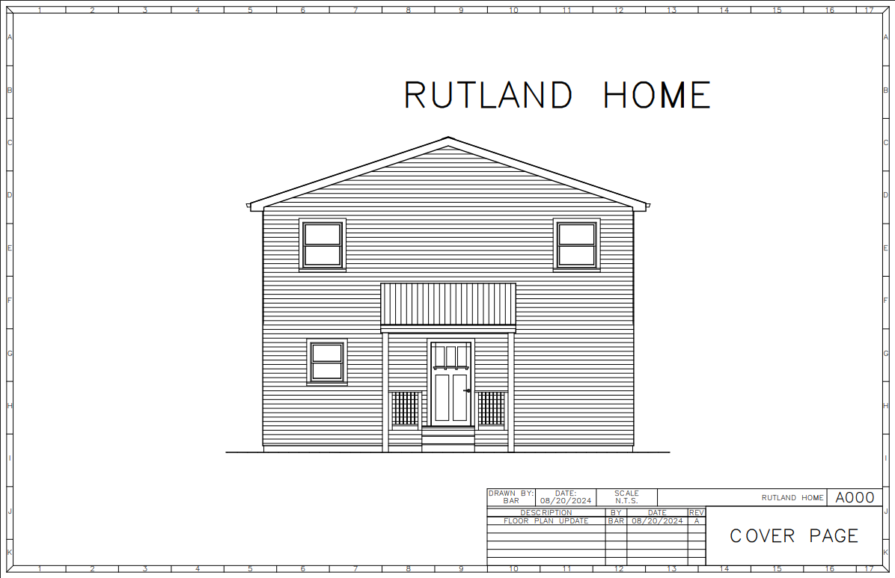
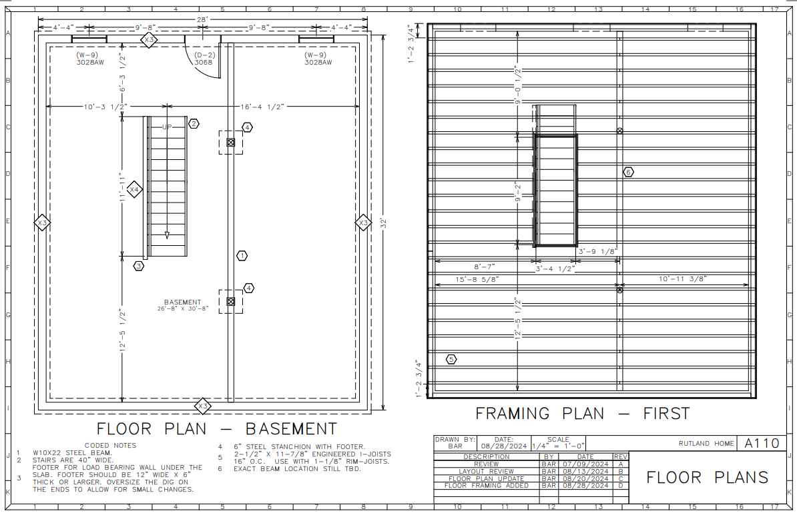
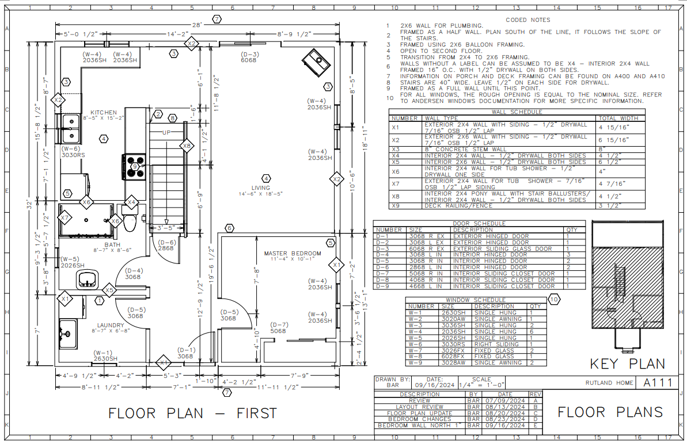
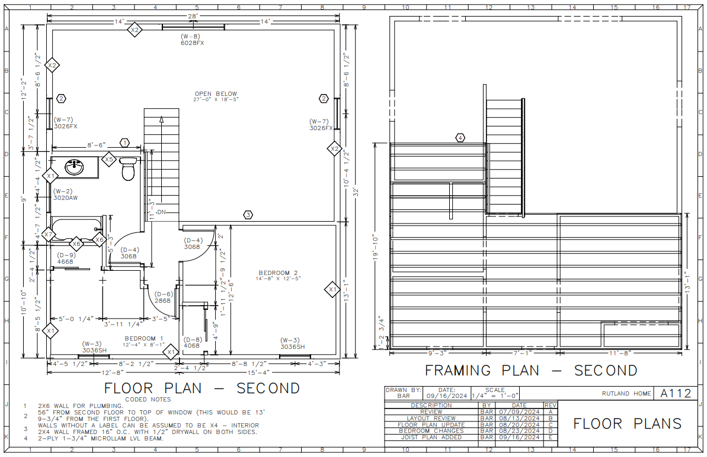
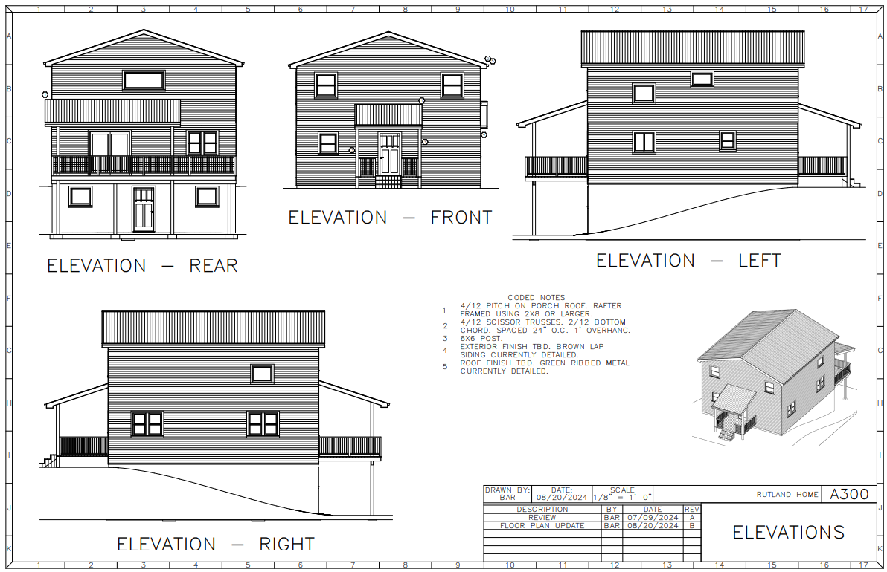
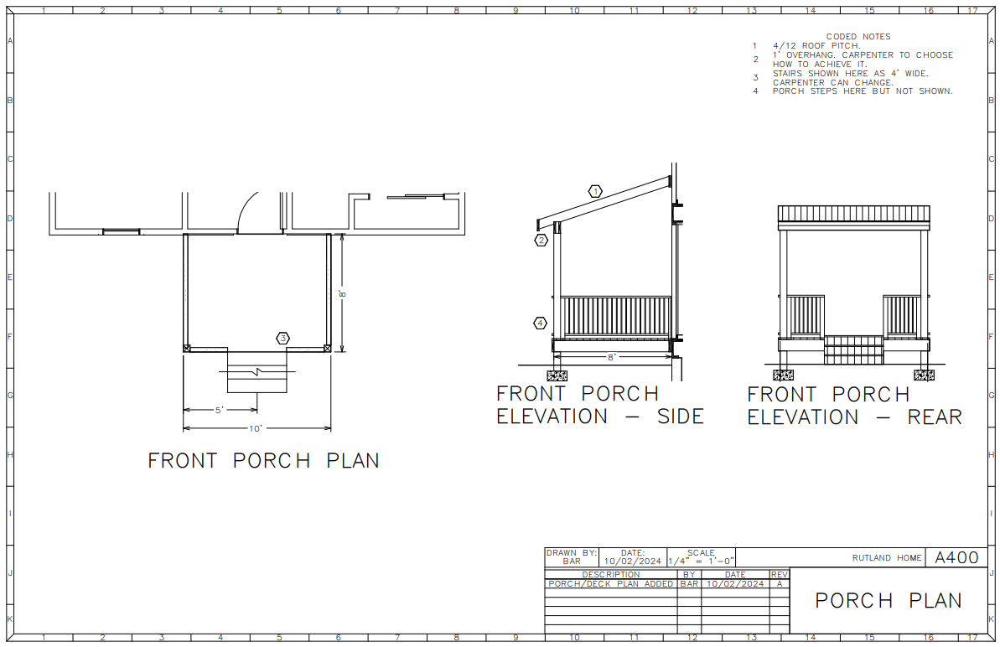
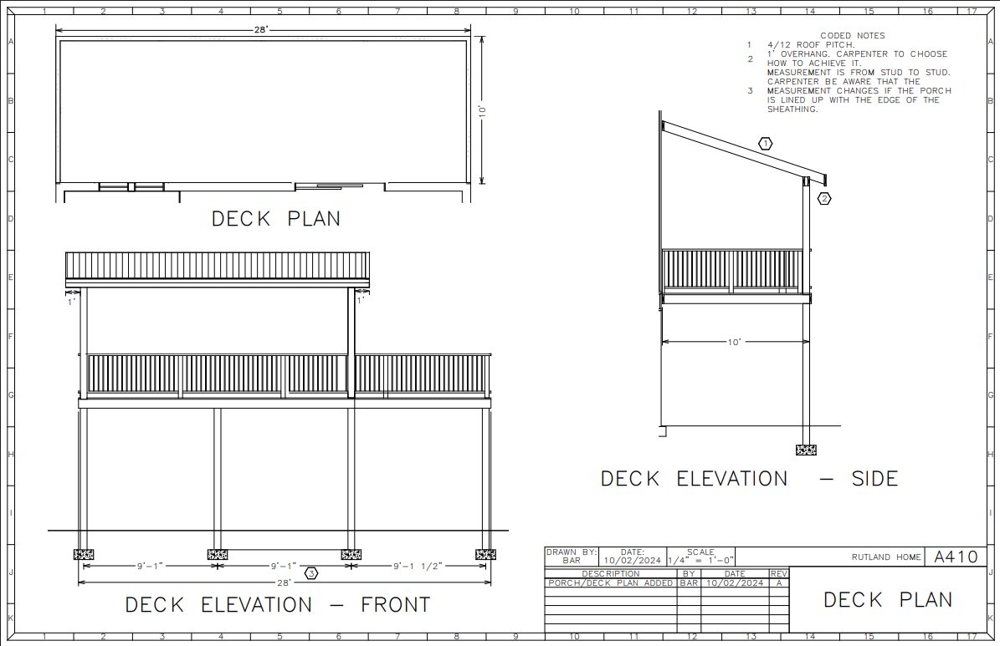

180k. That's how much we estimate it would cost you if we were to build you a home similar to our 1300 sf Cape Cod home. That's it; there's no other costs to you, other than your land. We found, online, a similarly sized manufactured home for $125k. The manufacturer used standard quality materials and none of the really cheap stuff that gave manufactured homes a bad name; it seems decent. We'll start with the fact that it, along with many manufactured homes is over 50' long and thus unable to fit on a standard 50x100 lot (without turning it 90 degrees of course), but we'll ignore that for now. The 125k price tag that is listed on the website is before any customizations (not a big deal, because your ability to customize is limited anyways), it doesn't include taxes, nor delivery, site, utility, or foundation work, and, of course, you add the cost of your land on top. What is the actual final cost of the manufactured home and is it even MORE expensive than a new Laurel Crown home when it's all said and done? Well, it's hard to say what the final price would actually be, and it probably is still less expensive than our home, but by less than you may expect. So, if you have been considering going the manufactured home route, reach out to us and see what it would cost to instead build the fully custom home of your dreams.







This is a set of building plans we produced for a custom house being built by a different contractor. Not our prefered style of home, but the homeowner knew what she wanted. The homeowner had drawn what she wanted on grid paper, and in a bid to save some money, she was hoping to have the house built on that alone. It was a good start, but it was smart for the contractor to insist she have the plans drafted in a CAD program. We used a BIM program and were able to show the homeowner her home in 3D. We spent a good amount of time working with her to turn her vision into something that could be built, and it was cool to see the house be framed, just like it looked on screen.